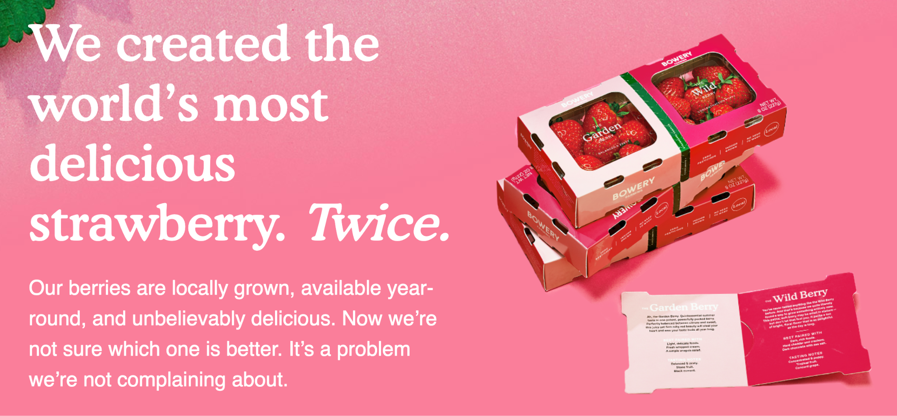
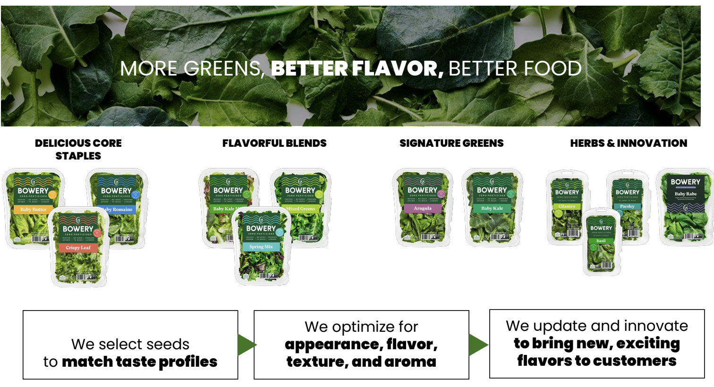
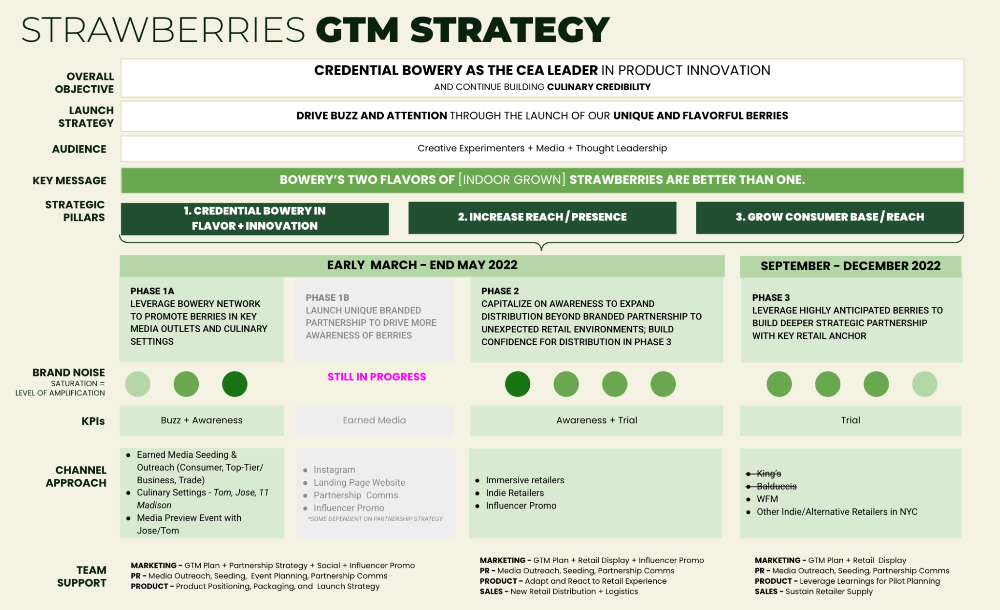
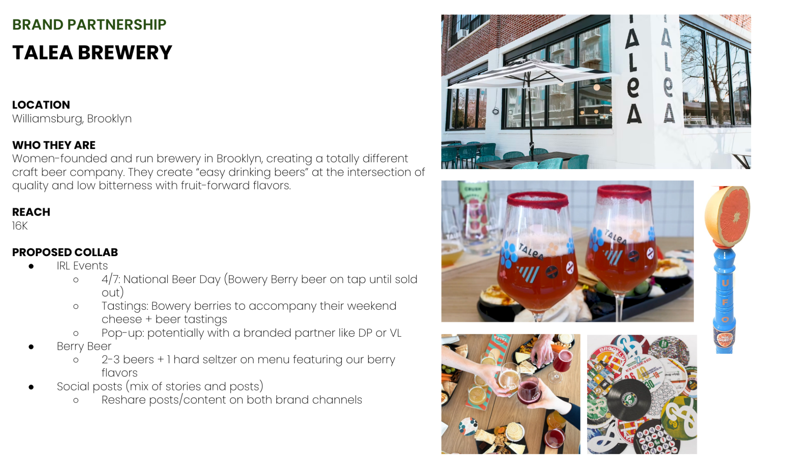
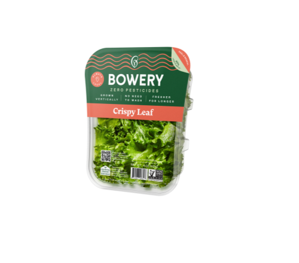
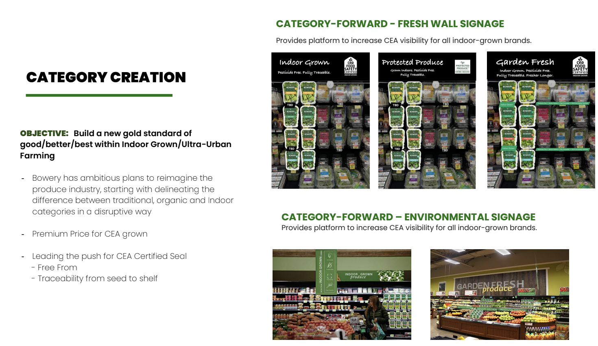
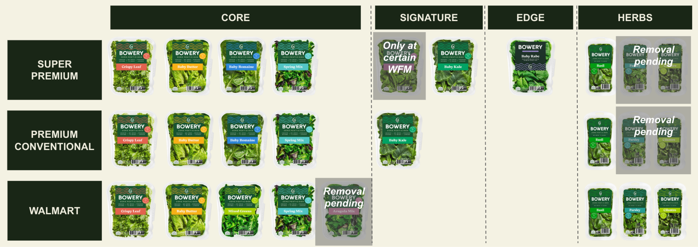

01
Positioning & Messaging
Mammoth — AI-Ops Product Positioning
The Challenge
- $100B supply chain SaaS market dominated by legacy ERPs (SAP, Netsuite, Odoo) that are slow to deploy and poorly suited for mid-market CPG
- Teams still running procurement, reconciliation, and supplier management in spreadsheets and email — manual processes costing CPGs $800B/year
- Needed to demonstrate value over in-house tools and entrenched incumbents
The Positioning
- Framed Mammoth as the "intelligent layer between spreadsheets and ERP" — not replacing systems of record, but making them useful
- Led with the AI wedge: domain-specific LLMs that extract, unify, and act on fragmented supply chain data to create a single source of truth
- Positioned Mammoth as uniquely both "easy to use" and "highly configurable" vs. point systems, planning tools, BI tools, and ERPs
Messaging Architecture
- Problem narrative: Data is fragmented and ops teams are reactive
- Solution frame: AI-planning that unifies your data and automates your workflows
- Proof points: $500K cost savings, 90% time reduction, 400% NRR, $1M+ pipeline — all from a single anchor customer in 12 months
.png)
Mammoth as a connected intelligence layer
.png)
Early metrics that showed proof points for customers and investors
.png)
Easier to use and more configurable than alternatives
Key Insight
- Buyers weren't looking for another system that would add complexity to their workflows — they wanted a way to unify all of their data. Even though we wanted to ultimately replace components of other SoRs, our initial positioning (and ultimate vision) was to unify and simplify.
Berry Duo — Cultivar-Forward Messaging
The Challenge
- $8B berry category — massive TAM, but challenging unit economics
- Needed to justify a premium price point
- Product looked similar to conventional berries, and couldn't claim "organic"
The Positioning
- Created a flavor-forward strategy: introduced new cultivars as Garden Berry and Wild Berry to showcase distinct flavor experiences and unique origin story
- Garden Berry: "quintessential summer sweetness" — familiar, nostalgic, approachable
- Wild Berry: "a rollercoaster of flavor" — complex, tart, adventurous
- Premium packaging with flavor stories and QR microsite linking to cultivar content


The Garden Berry
Ah, the Garden Berry. Quintessential summer taste in one gorgeous, powerfully packed berry. Perfectly balanced between citrusy and sweet, this juicy yet firm ruby red beauty will steal your heart and woo your taste buds all year long.
Best Paired With
Light, delicate foods. Fresh whipped cream. A simple arugula salad.
Tasting Notes
Balanced & zesty. Stone fruit. Black currant.
The Wild Berry
You've never tasted anything like the Wild Berry before. And that's because we quite literally found a way to grow something entirely new. This petite, soft berry may be small in stature, but don't let that fool you. It packs a ton of bright, floral flavor that is as delightful as the day is long.
Best Paired With
Dark, rich foods. Hard cheddar and crackers. Dark chocolate with sea salt.
Tasting Notes
Concentrated & peony. Tropical fruit. Concord grape.
Key Insight
- Cultivar (and flavor) forward positioning turned our disadvantage into something unique and buzzy, and helped build our brand story while providing air cover for us to learn our way into a new category.
Spring Mix — Flavor and Usage Occasion
The Challenge
- Bowery was known for specialty greens, but spring mix was the volume play — a $500M+ subcategory and gateway product for mainstream shoppers
- Needed messaging that preserved Bowery's premium identity while expanding into everyday occasions, competing against private label at lower price points
The Positioning
- Led with freshness and taste as differentiators to drive interest — longer shelf life, more vibrant flavor, no wilting at the bottom of the bag
- Elevated the textures and flavors that make up a mix that usually go unnoticed ("sensory party" was internal language only)
- Launched new 8oz family size to expand from specialty single-serve into everyday meal occasions: salads, sandwiches, smoothies, cooking
.png)
Creating novelty through flavor language and occasion-based storytelling.
Key Insight
- By anchoring our messaging in flavor and usage occasions, we were able to bring energy to an overlooked SKU/subcategory while reinforcing our brand RTBs.
02
Product Innovation & Platform Building
Farmer's Selection — Seasonal Innovation Platform
The Strategic Problem
- Bowery's core line (lettuce, spinach, spring mix) was driving volume but competing in commoditized categories with thin margins and low brand differentiation
- R&D could grow novel products — but there was no framework for deciding what to bring to market, how to position it, or where to sell it
- The company needed an innovation engine that could simultaneously build brand heat at the top of the portfolio, open new channels, and prove our category promise without cannibalizing the core business
The Vision
- Built Farmer's Selection as a platform for "forgotten seeds" — heirloom and specialty cultivars that traditional agriculture couldn't reliably grow at scale
- Designed to serve 5 strategic objectives: Consumer (cultivar-forward flavor), Product (showcase R&D), Channel (test new retail/foodservice paths), Business (premium price tier), Brand (establish Bowery as culinary innovator)
- Starting lineup: Wasabi Arugula; then Mustard Frills (did so well we kept it evergreen), Baby Rabe, Chrysanthemum Greens, each chosen for flavor intensity, visual distinction, and culinary interest
- Built a consumer co-creation community ("Creative Experimenters") to test new products, provide feedback, and build use case stories before launch
Two-Pronged Platform Strategy
- Evergreen: permanent SKUs (e.g., Mustard Frills) that drove differentiation and incremental shelf space
- Limited Edition: seasonal/experimental cultivars (e.g., Chrys Greens) that drove brand heat
- Both platforms reinforced "food in full color" brand narrative. This architecture let us run fast experiments to build brand halo and while maintaining shelf space and growing our core

Cross-cutting strategic rationale

Two-pronged platform fueled by operational + market dynamics
Phased Channel Strategy
- Phase 1 — Hype & Intrigue: launch via experiential and culinary partnerships (Bonnie's BK / Calvin Eng, Mimi Cheng's) to build credibility and buzz
- Phase 2 — Commercialize: buzzy/alt retail (Neighborhood Goods, Pearl River Mart, Umamicart) and CPG cross-merchandising (Omsom, Bachan's BBQ)
- Phase 3 — Scale: traditional retail + ecomm (Whole Foods, FreshDirect) for SKUs that meet commercial viability criteria
- Test case — Chrysanthemum Greens: Limited Edition cultivar launched with Calvin Eng (Bonnie's BK) as a culinary credentialing partner, anchored at Umamicart, with recipe amplification driving the halo
.png)
3-phased channel strategy

Farmer's Selection anchored the portfolio around "food in full color" positioning
Key Insight
- The full value of innovation often goes beyond each individual launch. Farmer's Selection gave us a reason to talk to consumers about flavor, quality, and provenance in a way that elevated the entire Bowery portfolio.
Salad Kits — Value-Added Product Innovation
The Strategy
- Moved Bowery from commodity greens into the higher-margin prepared/value-added category — a strategic shift from ingredient to meal solution
- Developed Bowery's first complete salad kits: curated greens, dressing, and toppings in a single package
- Consumer testing validated the concept: 4.6/5.0 rating and 92% would recommend
Enablement & Sell-In
- Positioned kits as a trade-up opportunity within the existing Bowery shelf set, not a category expansion requiring new space
- Sales tools anchored in consumer data: preference testing, margin projections, and competitive category analysis
- Pricing strategy: premium to private label salad kits, but anchored to Bowery's existing price tier to reduce sticker shock
.png)
Salad Kits: Bowery's first value-added product line
Key Insight
- Salad kits created a trade-up path for existing customers and opened a $2.7B addressable market. Paired with Farmer's Selection at the top and staples at the base, it completed a portfolio that could serve every occasion and price point.
03
Go-to-Market & Launches
Berries — Brand-Led 360 GTM
Launch Strategy
- Limited edition product with variable and limited supply
- We solved this by developing a 3-phase rollout that didn't rely on traditional retail: from foodservice seeding to retail launch to banner expansion
- Credential (foodservice seeding at Eataly, Eleven Madison) → Reach (retail launch + press) → Scale (banner expansion with A/B-tested pricing)
Partnerships & Cultural Activation
- Leveraged José Andrés partnership to reinforce flavor story
- Seeded strawberries placed at Andrés' restaurants for culinary credentialing
- Developed experiential co-marketing launch activations with Talea Brewery, Neighborhood Goods to convert brand buzz into trial

Berry GTM strategy: phased rollout

Launch plan timeline: cross-functional milestones

Talea Brewery co-marketing activation

New York Times (Florence Fabricant): earned media
Key Insight
- We turned an operational barrier (yield variability) into a brand moment by leveraging partnerships and experiential marketing to build brand buzz and drive trial.
Farmer's Selection — Mustard Frills & Baby Rabe
Mustard Frills Launch
- First Farmer's Selection cultivar to go-to-market — a specialty mustard green with bold wasabi-like flavor
- Influencer partners: Eric Adjepong (Top Chef), Dan Pelosi, Kia Damon, Gena Hamshaw — each structured as a content engine: recipes, social, in-store events
Baby Rabe Launch
- Campaign: "Our Favorite Fall Layer" — 3 objectives: communicate flavor, overcome barriers to trial, ladder to the creativity and community of the Bowery brand
- Dan Pelosi + Renato Poliafito (Ciao Gloria) popup activation — experiential retail moment that converted social buzz into sell-through
- Pre-launch validation: 78% purchase intent from 330-person consumer panel confirmed the positioning before we spent on activation
.png)
Mustard Frills marketing results
.png)
Baby Rabe 360 launch: influencer and menu collaboration
 (1).png)
Baby Rabe visual identity and packaging assets

Baby Rabe creative brief
Key Insight
- The most effective launches surround sound consumers and pop up in unexpected places. Mustard Frills and Baby Rabe worked because we built a 360 activation: culinary credibility, experiential retail, earned media, and community (brand ambassadors). Each touchpoint fed the next.
Crispy Leaf — Channel-Led Launch
Launch Strategy
- Channel-led: timed launch to retailer reset windows and built the sell-in story around what buyers care about — yield, shelf-life, and margin contribution
- Compressed timeline by 4 weeks through a stage-gate process that kept cross-functional teams aligned without skipping gates
- Category-forward strategy: positioned Crispy Leaf as a signal that Bowery could deliver reliable, scalable innovation on the retailer's timeline
Enablement & Activation
- Educated sales team to lead with the operational story (yield, shelf-life) in buyer meetings, not just the brand story
- Developed SKU shelf sets, scorecards, and category collateral for top-to-top retailer conversations
- Category-forward fresh wall signage
- Repeatable brand partnership playbook used across retail activations

Product packaging

Category creation
Key Insight
- Crispy Leaf worked because the product made everyone's job easier — R&D had a high-yield cultivar, retailers got a margin contributor, and consumers got crunch. The SKU became a platform for future expansion into mixes, kits, and meal solutions.
04
Commercial Strategy & Sales Enablement
Customer Renewal & Expansion
Context
- The Farmer's Dog (anchor customer) started with a $1K/month pilot on cost reconciliation. Over 12 months, expanded into order management, contract tracking, inventory optimization, and supplier compliance
- Challenge: justify 5x+ price increase at renewal by quantifying the full value delivered
Approach
- Built a comprehensive business case mapping every module to measurable ROI — cost savings, time saved, compliance improvement, and inventory opportunity
- Structured the pricing conversation around value tiers: showed where TFD's actual usage fell vs. standard packaging, then presented options at three price points
- Used a "before/after" narrative — not feature-by-feature, but workflow-by-workflow — to make value visceral for operations and finance stakeholders
.png)
Business case
 (1).png)
Workflow transformation
 (2).png)
Pilot results & ROI
 (3).png)
Pricing strategy to land the right investment level
GTM Architecture
- Land: cost reconciliation as the wedge — fastest time to value, clearest ROI
- Expand: order management, contracts, inventory, forecasting — each module unlocks new budget and new stakeholders
- Retain: data network effects create switching costs — the longer a customer uses Mammoth, the more the system adapts
- Pricing: tiered by modules, users, and data volume ($1K–$10K+/month), with value-share upside for larger customers
Key Insight
- Anchor the customer in workflow transformation and clear ROI. Build pricing tiers that grow over time.
Product & Channel Architecture
The Framework
- Built a tiered product architecture: Core (volume plays — lettuce, spinach), Signature (innovation — salad kits, crispy leaf), Edge (R&D-led — strawberries, herbs), and Chef/Foodservice
- Mapped each tier to specific channels (grocery, club, foodservice) with pricing guardrails and margin targets
- Enabled thoughtful and profitable channel growth (from 1 to 2,600 doors) and enabled the sales teams with tools to use in top-to-tops
Expansion Framework
- Grounded roadmap in market sizing and cross-functional evaluation criteria: Commercial (market size, margin, channel fit, brand impact), AgScience (grow capability, yield), Farm Design (capital, throughput), Technology (automation readiness)
- Output: ROI/feasibility that made trade-offs visible to the exec team

SKU × channel matrix
 - 043022 (1).png)
Market sizing
Key Insight
- Launching products successfully isn't just about building a strong campaign, it's about developing the decision architecture that makes success repeatable. This framework outlasted my time at Bowery and became the default tool for evaluating new products, formats, and channel opportunities because it gave every team a shared language for evaluating new opportunities.